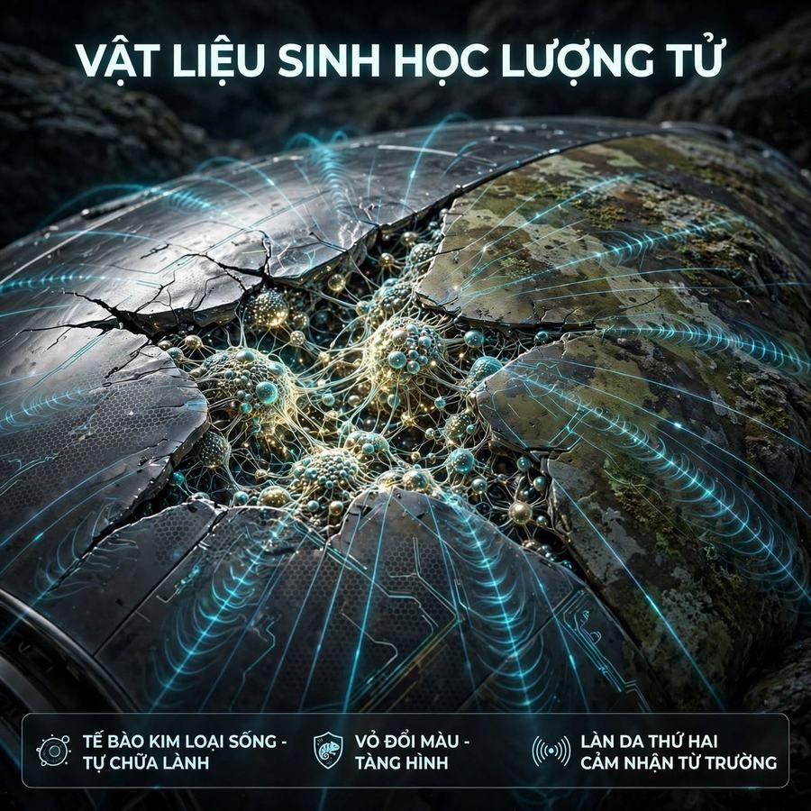
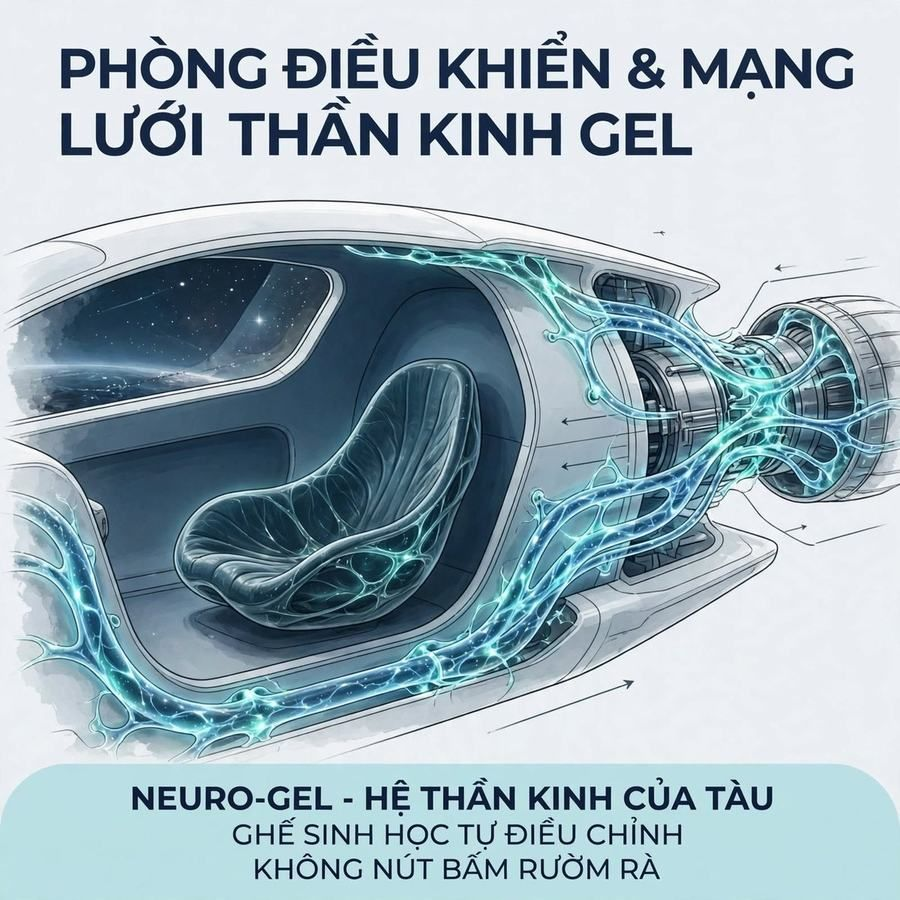
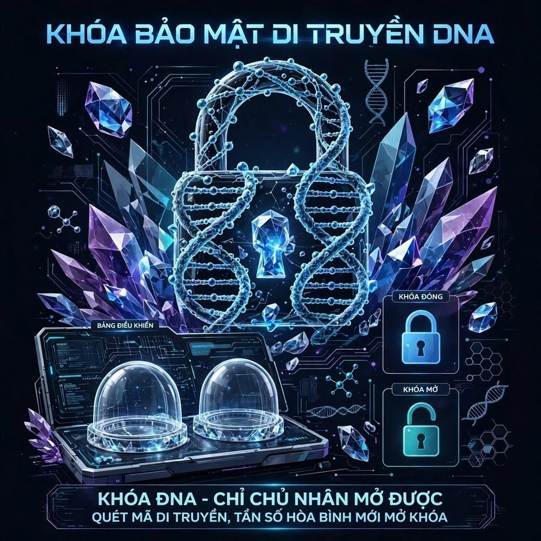
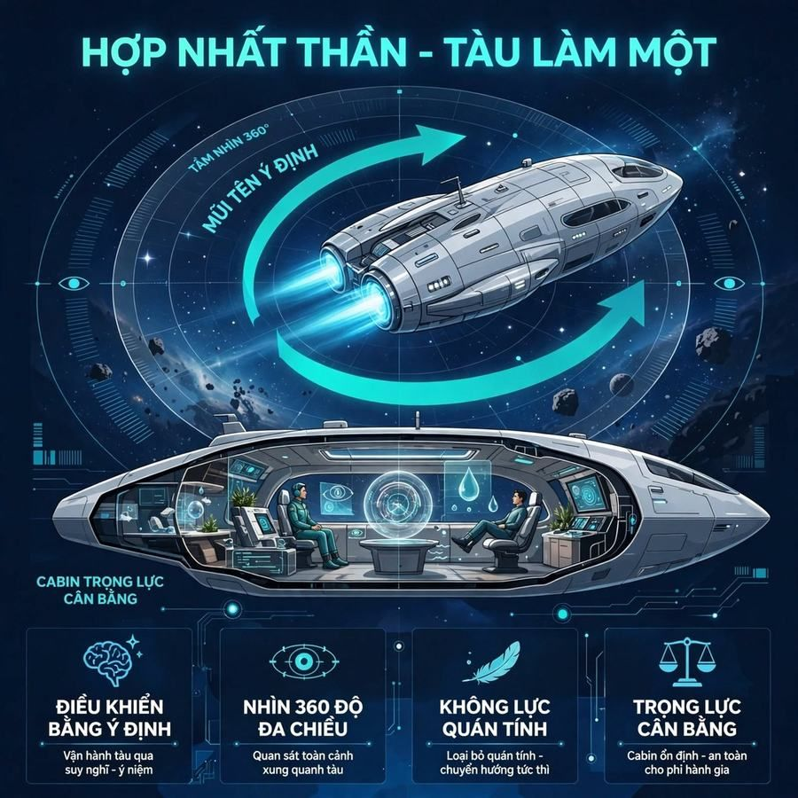
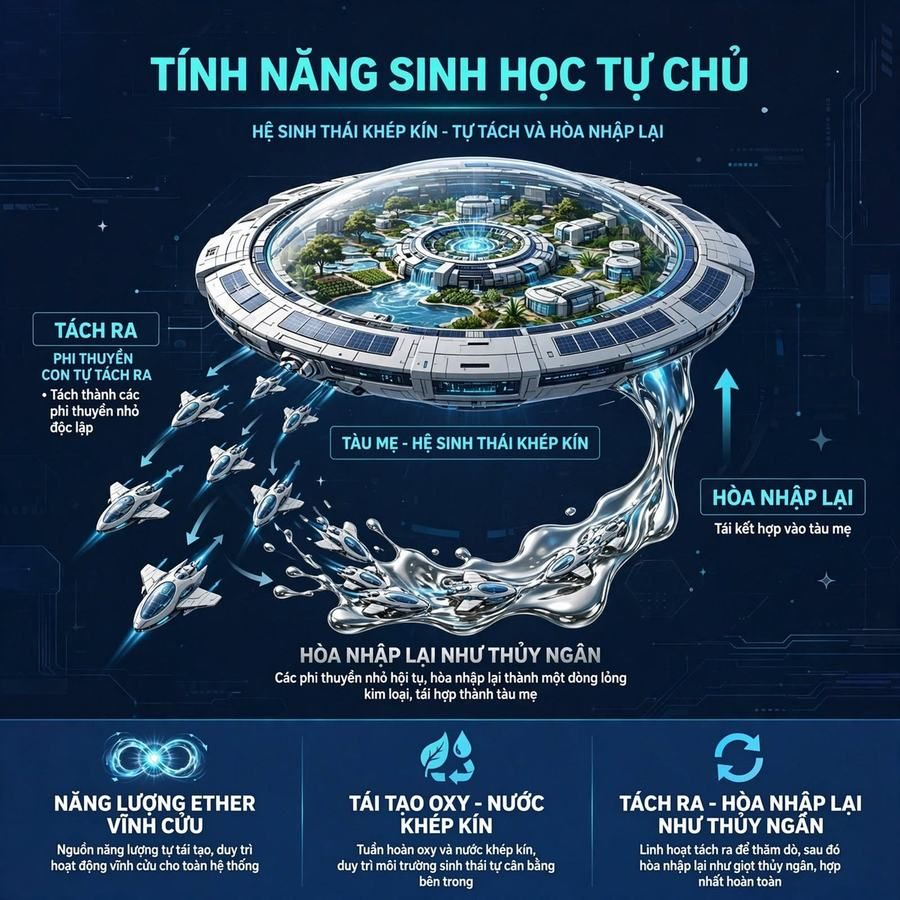
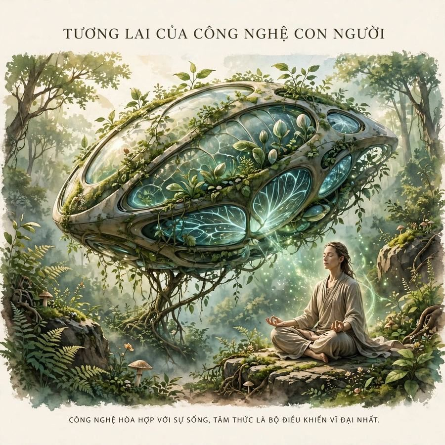

Trang chủ / Chuyên đề 8: Khoa Học & Công Nghệ / Kỳ 72
Chuyên đề 8 · Kỳ 72 / 90
PHI THUYỀN SINH HỌC LƯỢNG TỬ & GIAO DIỆN Ý THỨC (MIND-DNA DRIVE)

Bạn đã bao giờ tự hỏi: Làm thế nào một chiếc phi thuyền ngoài hành tinh có thể đổi hướng vuông góc 90 độ ngay ở tốc độ siêu thanh mà không bị lực quán tính xé rách? Tại sao bên trong phòng điều khiển của các đĩa bay lại hoàn toàn không thấy bảng nút bấm, cần gạt hay vô lăng phức tạp như phi thuyền Trái Đất? Và bí mật đằng sau những báo cáo về các vật thể bay có khả năng tự chữa lành vết thương, tự đổi màu hoặc thậm chí "sinh sản" ra các phi thuyền nhỏ hơn là gì?
Trong tư duy công nghệ cổ điển của con người, phi thuyền chỉ là một cỗ máy vật lý thô kệch được lắp ráp từ vô số mảnh kim loại, dây điện và mạch bán dẫn vô hồn. Tuy nhiên, đối với các nền văn minh thiên hà tiên tiến, ranh giới giữa "vật thể nhân tạo" và "sinh mệnh sống" đã hoàn toàn bị xóa bỏ!
Các phi thuyền liên sao cao cấp thực chất là những Thực thể Sinh học - Cơ khí Lượng tử (Biomechanical Living Entities). Chúng sở hữu hệ thần kinh sinh học, có khả năng giao tiếp trực tiếp với dải sóng não và mã di truyền DNA của phi công.
Hãy cùng giải mã trọn vẹn nguyên lý vận hành của Phi thuyền Sinh học Lượng tử & Giao diện Điều khiển bằng Ý thức (Mind-DNA Drive)!
✦ ✦ ✦1. BẢN CHẤT CỦA VẬT LIỆU SINH HỌC LƯỢNG TỬ (BIOMECHANICAL MATTER)
Để tạo nên một phi thuyền có thể chịu đựng được áp lực nhiệt độ cực hạn, bức xạ vũ trụ và lực xé rách không-thời gian khi nhảy qua các Cổng Sao, các kỹ sư vũ trụ không sử dụng các hợp kim nhôm, thép hay titan thông thường. Họ nuôi trồng một dạng vật liệu hoàn toàn mới: Hợp kim Tinh thể Sinh học Hữu cơ (Organic-Crystalline Alloy).
A. Vật liệu Tinh thể Máu-Thạch Anh Tự Chữa Lành
Vỏ của phi thuyền sinh học được cấu tạo từ các mạng lưới tinh thể thạch anh lượng tử kết hợp với các chuỗi polymer sinh học có khả năng tự phục hồi:
- Tế bào Kim loại Sống (Living Metallic Cells): Vật liệu này chứa các vi cấu trúc dạng tế bào sinh học. Khi vỏ tàu bị va chạm bởi mảnh vỡ thiên thạch hay trúng phải đạn năng lượng, các tế bào kim loại xung quanh lập tức phân chia và di chuyển đến vị trí tổn thương, lấp đầy vết nứt chỉ trong vài giây giống như quá trình tự chữa lành vết thương trên da người!
- Khả năng Thay đổi Cấu trúc Quang học (Shape-Shifting & Camouflage): Nhờ mạng lưới tinh thể nhạy cảm với tần số điện từ, vỏ tàu có thể tự điều chỉnh góc phản xạ ánh sáng để trở nên hoàn toàn trong suốt (tàng hình quang học) hoặc đổi màu sắc theo trường năng lượng của môi trường xung quanh.
B. Trường Điện từ Sinh học Bao bọc Vỏ Tàu (Bio-Electromagnetic Shield)
Vỏ phi thuyền không chỉ là tấm lá chắn vật lý mà còn là một cơ quan cảm giác sinh học:
- Nó liên tục phát ra một dải trường điện từ sinh học tần số cao bao bọc xung quanh.
- Trường năng lượng này đóng vai trò như "làn da thứ hai", giúp phi thuyền cảm nhận được sự thay đổi của mật độ từ trường, bụi vũ trụ và các dải sóng năng lượng từ hàng ngàn km trước khi chạm vào tàu.

2. CẤU TRÚC PHÒNG ĐIỀU KHIỂN VÀ MẠNG LƯỚI THẦN KINH GEL (NEURO-GEL NETWORK)
Khi bước vào bên trong phòng điều khiển của một phi thuyền sinh học lượng tử, bạn sẽ bất ngờ trước sự tối giản và tinh tế đến ngạc nhiên. Không có hàng ngàn công tắc, màn hình dây nhợ chằng chịt hay hệ thống ống dẫn dầu nhờn.
A. Chất dẫn truyền Thần kinh Dạng Gel (Neuro-Conductor Gel)
Chạy dọc theo vách tàu và bên dưới sàn phòng điều khiển là hệ thống mạch dẫn chứa Chất gel Sinh học Thần kinh (Neuro-Gel System):
- Chất gel này chứa hàng tỷ vi mạch carbon-silicon lỏng có khả năng truyền dẫn tín hiệu xung điện thần kinh với tốc độ gần như tức thời (nhanh gấp triệu lần dây dẫn đồng hay cáp quang).
- Nó đóng vai trò như "hệ thần kinh tủy sống" của phi thuyền, nối liền tất cả các bộ phận từ động cơ, hệ thống tàng hình, khiên năng lượng cho đến buồng điều khiển trung tâm.
B. Ghế Điều khiển & Bảng Giao diện Ý thức (Consciousness Interface Pedestal)
Ở trung tâm phòng điều khiển là một hoặc nhiều chiếc ghế được đúc bằng hợp kim sinh học mềm mại tự điều chỉnh theo phom cơ thể phi công.
- Trên tay vịn hoặc đĩa điều khiển phía trước thường có hai vòm lõm đặt tay làm bằng tinh thể mờ hoặc chất gel cảm ứng.
- Nơi đây chứa các cảm biến quét trường sinh học siêu nhạy, sẵn sàng ghi nhận từng thay đổi nhỏ nhất trong nhịp tim, sóng não và điện trở da của phi công.

3. GIAO DIỆN ĐIỀU KHIỂN BẰNG MÃ DI TRUYỀN VÀ SÓNG NÃO (MIND-DNA DRIVE)
Đây chính là chìa khóa tối thượng giải thích vì sao một kẻ ngoại đạo hay kẻ thù khi chiếm đoạt được phi thuyền ngoài hành tinh lại hoàn toàn không thể khởi động hay điều khiển được nó!
A. Hệ thống Khóa Bảo mật Di truyền DNA (Genetic DNA-Lock)
Trước khi phi thuyền cho phép bất kỳ ai kết nối với hệ thống điều khiển, nó tiến hành một quy trình quét bảo mật lượng tử:
- Khi phi công đặt tay lên bảng điều khiển, phi thuyền lập tức quét toàn bộ Mã Di truyền DNA và Tần số Nhận thức của người đó.
- Phi thuyền sinh học chỉ chấp nhận kết nối nếu mã DNA của phi công trùng khớp với dòng gen đã được mã hóa trong bộ nhớ sinh học của tàu, hoặc nếu tần số nhận thức của phi công đạt đến dải sóng tâm thức hòa bình và từ bi (dải sóng Gamma/Delta thuần khiết).
- Nếu một cá nhân mang tần số sợ hãi, hung hãn hoặc mã DNA lạ cố tình xâm nhập, phi thuyền sẽ giữ nguyên trạng thái đóng băng vô hình hoặc phát ra sóng dừng làm tê liệt hệ thần kinh của kẻ đó!
B. Cơ chế Đồng bộ Sóng Não (Brainwave Synchronization)
Khi khóa bảo mật DNA được mở:
- Phi thuyền phát ra một dải sóng âm dịu nhẹ giúp đưa sóng não của phi công vào trạng thái Cộng hưởng Lượng tử (Quantum Resonance).
- Dải sóng não Alpha và Gamma của phi công hòa nhập trọn vẹn với tần số dao động của hệ thần kinh Neuro-Gel trên phi thuyền.
- Trong khoảnh khắc đó, ranh giới giữa thể xác phi công và vỏ kim loại của phi thuyền hoàn toàn biến mất! Phi công không còn cảm thấy mình đang "ngồi bên trong một cỗ máy", mà cảm nhận phi thuyền chính là một phần mở rộng của cơ thể mình!

4. TRẠNG THÁI HỢP NHẤT "THẦN - TÀU LÀM MỘT" VÀ CÁCH ĐIỀU HÀNH PHI THUYỀN
Khi sự hợp nhất tâm thức hoàn tất, việc điều khiển phi thuyền trở nên đơn giản và tự nhiên như việc bạn điều khiển đôi tay hay đôi chân của chính mình.
A. Điều khiển bằng Ý định Tập trung (Thought-Activated Flight)
- Muốn rẽ hướng: Phi công không cần quay vô lăng hay gạt cần. Phi công chỉ cần "nhìn" hoặc "hình dung" trong tâm trí hướng đi mới, phi thuyền sẽ lập tức rẽ hướng ngay trong chớp mắt mà không có bất kỳ độ trễ nào!
- Muốn gia tốc hay nhảy không gian: Phi công chỉ cần tập trung ý định gia tốc, động cơ lượng tử sẽ tự động trích xuất năng lượng Điểm Không và tạo ra bong bóng Warp để bẻ cong không gian.
- Quan sát 360 độ đa chiều: Phi công không cần nhìn qua cửa sổ vật lý nhỏ hẹp. Thông qua kết nối thần kinh, giác quan của phi công mở rộng ra toàn bộ bề mặt vỏ tàu. Phi công "nhìn thấy" toàn cảnh không gian 360 độ xung quanh, nhận biết rõ từng thiên thể, năng lượng từ trường và mối đe dọa từ cự ly hàng ngàn km!
B. Vô hiệu hóa Lực Quán tính bằng Trường Sinh học Tập thể
Một trong những bí ẩn lớn nhất là làm thế nào phi công sống sót khi phi thuyền thực hiện các cú rẽ hướng gấp ở tốc độ Mach 20 hoặc dừng lại đột ngột.
- Do phi thuyền và phi công đã hợp nhất vào cùng một Bong bóng Trường Sinh học Không-Thời gian (Bio-Gravitational Field), lực hấp dẫn và lực quán tính bên ngoài hoàn toàn bị triệt tiêu.
- Bên trong cabin, trọng lực luôn giữ ở mức cân bằng hoàn hảo. Dù phi thuyền đang lộn vòng hay hạ cánh khẩn cấp, phi công vẫn cảm thấy hoàn toàn êm ái như đang đứng yên trên mặt đất!

5. CÁC TÍNH NĂNG SINH HỌC TỰ CHỦ ĐẶC BIỆT CỦA PHI THUYỀN LƯỢNG TỬ
Do bản chất là một sinh thể công nghệ - sinh học, phi thuyền sở hữu những năng lực tự chủ vượt xa trí tưởng tượng của khoa học thô sơ:
A. Tự Tạo Sinh quyển Nội tại & Năng lượng Tuần hoàn
- Phi thuyền không cần nạp nhiên liệu hóa thạch hay nguyên liệu hạt nhân tiêu hao. Động cơ của tàu trích xuất năng lượng vĩnh cửu từ trường Ether.
- Hệ thống tái tạo không khí và nguồn nước sinh học bên trong tàu vận hành theo chu trình sinh thái khép kín. Các vi tảo và tinh thể lọc năng lượng tự động chuyển hóa chất thải thành oxy tinh khiết và nước khoáng giàu dinh dưỡng, giúp phi thuyền có thể hoạt động liên tục trong không gian hàng chục năm mà không cần ghé trạm tiếp tế.
B. Khả năng Tự Phân tách và Tái Hợp Hợp thể
Một số dòng phi thuyền sinh học cỡ lớn (tàu mẹ) sở hữu khả năng tự phân tách kỳ diệu:
- Khi cần thực hiện các nhiệm vụ do thám đa điểm, tàu mẹ có thể tự tách một phần vỏ và cấu trúc sinh học của mình ra để tạo thành các phi thuyền con độc lập.
- Các phi thuyền con này mang trọn vẹn dải sóng thần kinh của tàu mẹ. Sau khi hoàn thành nhiệm vụ, chúng hạ cánh trở lại và "hòa tan" vỏ tàu của mình nhập trọn vẹn trở lại vào thân tàu mẹ giống như các giọt thủy ngân hòa vào nhau!

6. BÀI HỌC VÀ TƯƠNG LAI CỦA CÔNG NGHỆ CON NGƯỜI TRÁI ĐẤT
Sự hiểu biết về Phi thuyền Sinh học Lượng tử & Giao diện Ý thức mang lại những bài học sâu sắc cho sự phát triển khoa học tương lai của nhân loại:
- Công nghệ phải gắn liền với Sự Phát triển Tâm thức: Công nghệ tiên tiến nhất không phải là những cỗ máy tàn phá môi trường hay vũ khí hủy diệt, mà là công nghệ hòa hợp trọn vẹn với ý thức, sự sống và tự nhiên.
- Khai mở Sức mạnh Nội tại của Con người: Việc phi thuyền cần đến dải sóng não Gamma/Alpha và lòng từ bi để kích hoạt nhắc nhở chúng ta rằng: Chính tâm thức và di sản DNA của con người mới là bộ điều khiển vĩ đại nhất! Khi con người nâng cao tần số nhận thức, chúng ta sẽ tự nhiên làm chủ được những công nghệ vũ trụ tối thượng này.

Bình luận
Chia sẻ cảm nhận, câu hỏi hoặc tài liệu đối chiếu. Không cần đăng nhập.
Đang tải…